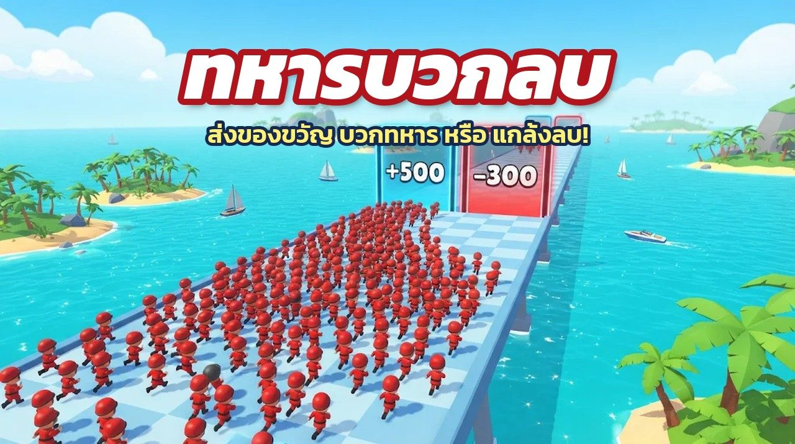
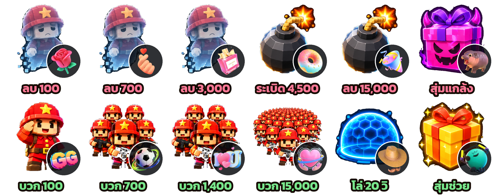

ทหารบวกลบ · คำสั่ง
เกมไลฟ์ YLTik · คนดูส่งของขวัญ บวกทหาร หรือ แกล้งลบ (ติดลบได้) · ถึงเป้าแล้วค้างไว้ 15 วิ = ชนะ · แต่ละคำสั่งมีคลิปให้ดูว่าเกิดอะไรขึ้น
📦 พรีเซ็ต + รูป
นำเข้าใน YLTik: ไฟล์ army-yltik-preset.jnt → Import พรีเซ็ต · ในกฎแต่ละอันใส่คำสั่งในช่อง command ตามปุ่มก๊อปด้านล่าง

🏆 นับวิน (YLTik)
ชนะ = วิน +1 เอง · แพ้/เริ่มใหม่ไม่ลบ · ของขวัญ สู้ ๆ! (299💎) = +1 วิน · คอร์กี้ (299💎) = −1 วิน (กฎแบบ Webhook ยิงไป http://localhost:4621/win/up/1 / /win/down/1)
🛡️ ช่วย บวกทหารให้ถึงเป้า
บวกทหาร · เลข = จำนวน (ส่งรัวคูณตามจำนวนครั้ง) · ของใหญ่ขึ้นป้ายกลางจอ
 GG = +100
GG = +100 ฟุตบอลหมุน = +700ฉันรักคุณ = +1,400
ฟุตบอลหมุน = +700ฉันรักคุณ = +1,400 มืออุ้มหัวใจ = +15,000ไลค์ทุก 100 = +100
มืออุ้มหัวใจ = +15,000ไลค์ทุก 100 = +100สุ่มช่วย: กล่องเสบียงร่มชูชีพลอยลงมาหาทหาร ตัวเลขวิ่งขึ้นแล้วค่อยๆ ช้าลง ตกถึงพื้น = บวกตามเลขที่ได้ · ตั้งช่วงเลขเองได้
โล่: โดมฟ้าคลุมทหาร กันโดนลบทุกอย่าง (ของแกล้ง ระเบิด ประตูลบ) · เลข = วินาที ส่งซ้ำเวลาบวกเพิ่ม
💀 แกล้ง ลบทหาร ติดลบได้
ลบทหาร · เลข = จำนวน (ส่งรัวคูณตามจำนวนครั้ง)
 กุหลาบ = −100
กุหลาบ = −100 หัวใจนิ้ว = −700น้ำหอม = −3,000กระดาษโปรย = −15,000
หัวใจนิ้ว = −700น้ำหอม = −3,000กระดาษโปรย = −15,000ติดลบได้ · ลบจนต่ำกว่า 0 ทหารกลายเป็นสีซีด ตัวเลขแดง ต้องบวกกลับขึ้นมาก่อน
ระเบิด: ลูกระเบิดตกใส่ฝูง ระเบิดตูม จอสั่น ลบทหาร · เลข = จำนวน
สุ่มแกล้ง: วงเล็งสีแดงขึ้นที่ทหาร มิสไซล์พุ่งลงมา ตัวเลขวิ่งจนถึงตอนระเบิด = ลบตามเลขที่ได้ · ตั้งช่วงเลขเองได้
 ฮิปโปน้อย · 15 เหรียญใจส้ม = 50–500
ฮิปโปน้อย · 15 เหรียญใจส้ม = 50–500🎮 วิธีเล่น สตรีมเมอร์
ประตู + / − มอนสเตอร์ บอส และของเก็บ วิ่งเข้ามาเรื่อยๆ · ทหารยิงมอนสเตอร์เอง (คนเยอะยิงแรง) ยิงไม่ตายต้องหลบ ไม่งั้นโดนลบ · กด ← → / A D ย้ายเลนซ้าย-ขวา เลือกทาง · ฉากเปลี่ยนทุก 50 วิ
ยิงมอนสเตอร์ตาย → ของหล่นบนถนนในเลนนั้น ต้องวิ่งไปเก็บถึงจะได้ (ทหาร / ปืน / ยิงไว / โล่)
บอสตัวใหญ่ เลือดเยอะ ยิงล้มได้ทหารก้อนใหญ่กว่า · ยิงไม่ทันต้องหลบเลน ไม่งั้นโดนลบ
เก็บปืนตามทาง: ปืนกลมือ ลูกซอง ปืนกล จรวด · ยิงแรงขึ้น มีจำนวนนัด · เก็บใหม่ = เปลี่ยนเป็นอันล่าสุด
ถึงเป้า (ค่าเริ่ม 50,000 ตั้งได้) → นับถอยหลัง 15 วิ · ต่ำกว่าเป้าระหว่างนับ = ยกเลิก · โดนของแกล้งระหว่างนับ = "โดนแกล้ง! นับใหม่" เริ่ม 15 วิใหม่ · นับครบ = ชนะ!